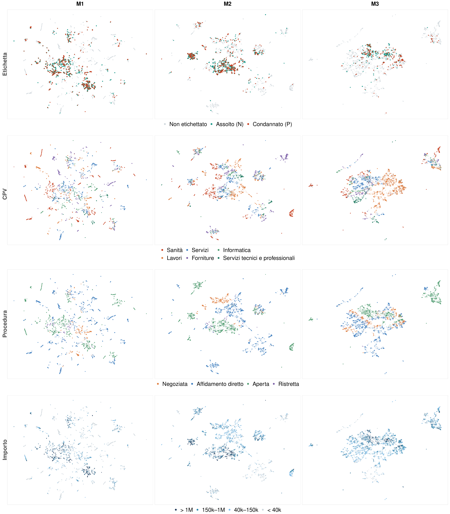
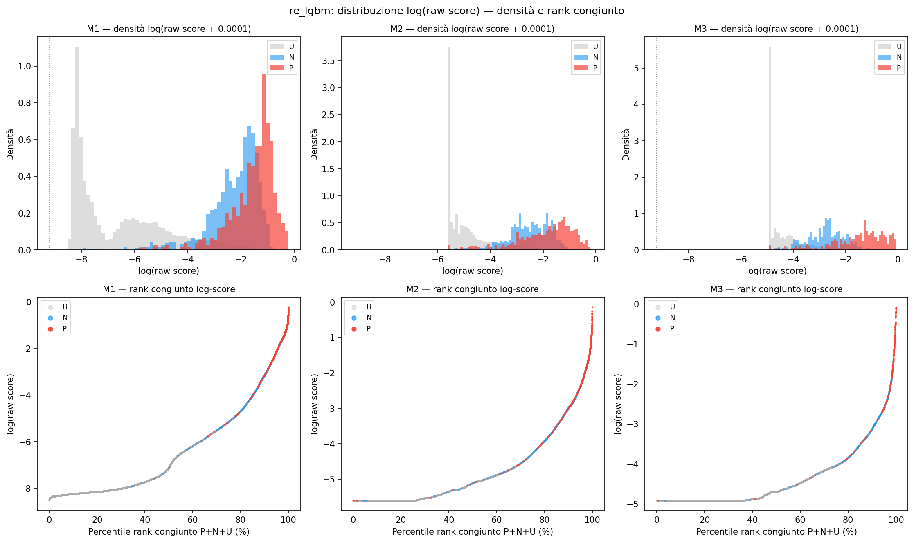

Project 01
Corruption risk scoring across 9.5 million public contracts using Positive-Unlabeled learning and the APPalti Streamlit app.
Overview
We built a fraud detection pipeline for Italian public procurement, training on 9.5 million ANAC contracts (2008–2025) under a Positive-Unlabeled learning framework that accounts for severe labeling asymmetry: only contracts with favorable TAR court rulings or crime-related closures are labeled corrupt, while the remainder are unlabeled. Three temporal models — ex-ante, in-itinere, and ex-post — integrate procurement microdata with ISTAT territorial indicators. The nnPU risk estimator with LightGBM serves as the reference model, and results are exposed through APPalti, a Streamlit application for single-contract and batch-level corruption risk scoring with SHAP-based explanations.
Recognition
This project was awarded 1st Prize at the Laboratorio di Statistica con le Aziende, organized by the Department of Statistical Sciences at the University of Padova (2026 edition). Projects were evaluated on statistical methodology, business applicability, and communication quality.
Insight
The nnPU LightGBM model achieves a Lift@1% of 21.9 on the ex-post model, identifying high-risk contracts at over 20× the base rate; Platt scaling brings calibrated ECE below 0.06. SHAP analysis reveals lot amount, delegation structure, award delay, and cost overrun as the most robust signals — consistent with established corruption mechanisms in Italian public procurement.
Figures

